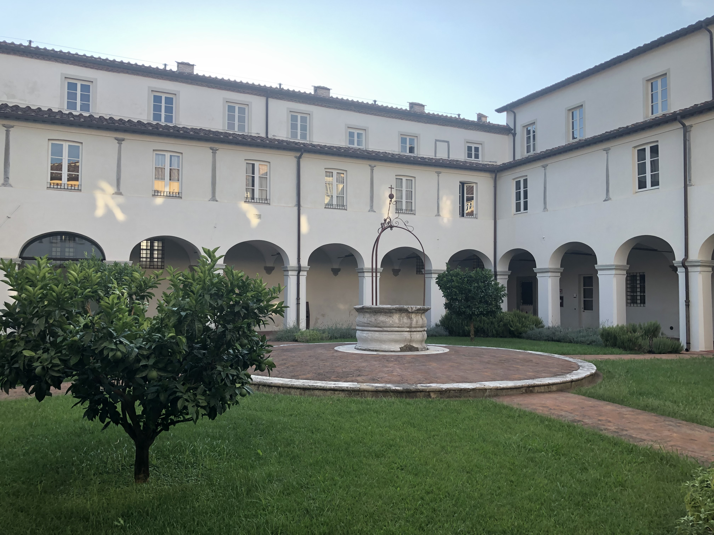

Next event
Here are reported noteworthy training events in which I had the pleasure of participating as a student.
Summer Shools
- The first edition of the School of the Italian Statistical Physics Society (Società Italiana di Fisica Statistica, SIFS), held at the IMT Scuola Alti Studi Lucca (Italy) from August 29 to September 8, 2022.

San Francesco Complex, IMT Scuola Alti Studi Lucca (Italy)